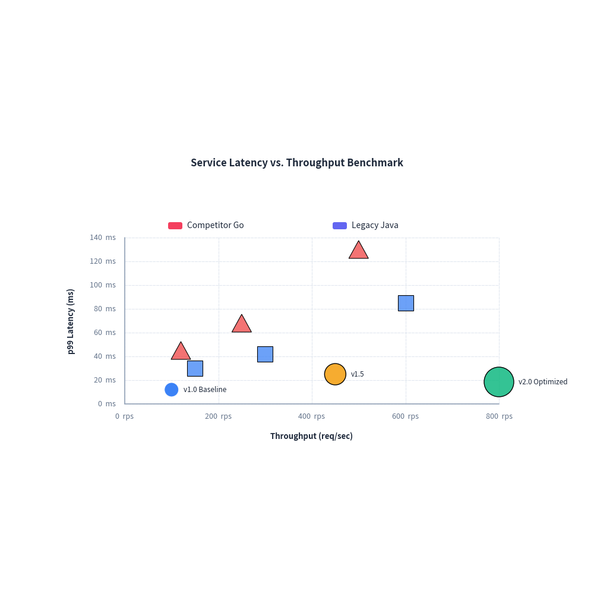
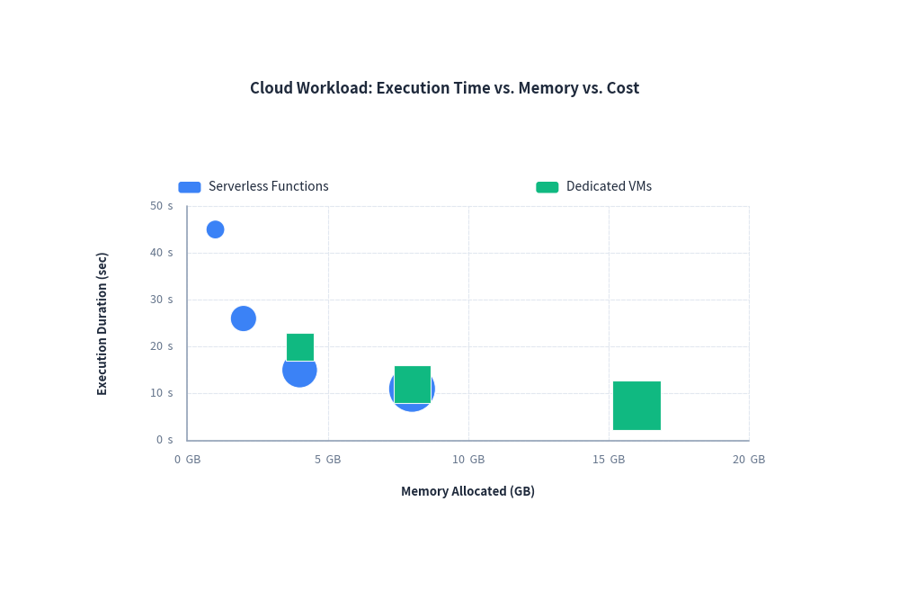

Scatter Chart Guide
drawlib.charts.ScatterChart provides 2D scatter and bubble charts for exploring quantitative relationships, benchmark comparisons, and multidimensional distributions.
1. Quick Start: Benchmark Comparison
Plot individual data points via add() and grouped series via add_series():
from drawlib import canvas
from drawlib._core.l3_styles import Style
from drawlib.charts import ScatterChart
canvas.initialize()
canvas.config(width=98, height=65)
chart = ScatterChart(
width=88.0,
height=55.0,
title="Service Latency vs. Throughput Benchmark",
)
chart.configure_x_axis(label="Throughput (req/sec)", unit=" rps", min_value=0, max_value=950)
chart.configure_y_axis(label="p99 Latency (ms)", unit=" ms", min_value=0)
# Individual data points with labels and custom styles
chart.add(xy=(100, 12.0), radius=1.2, label="v1.0 Baseline")
chart.add(xy=(450, 25.0), radius=1.8, style=Style(fill_color=(245, 158, 11, 0.85), line_width=1.0), label="v1.5")
chart.add(xy=(780, 18.5), radius=2.2, style=Style(fill_color=(16, 185, 129, 0.85), line_width=1.0), label="v2.0 Optimized")
# Grouped series with legend
chart.add_series(
name="Competitor Go",
data=[(150, 30.0), (300, 42.0), (600, 85.0)],
shape="square",
style=Style(fill_color=(59, 130, 246, 0.75), line_width=0.8),
radius=1.3,
)
chart.add_series(
name="Legacy Java",
data=[(120, 45.0), (250, 68.0), (500, 130.0)],
shape="triangle",
style=Style(fill_color=(239, 68, 68, 0.75), line_width=0.8),
radius=1.5,
)
chart.draw(xy=(5.0, 5.0))

2. Bubble Chart: Multidimensional Data
Pass 3-tuples (x, y, radius) to add_series() to represent a third variable using marker size:
from drawlib import canvas
from drawlib.charts import ScatterChart
canvas.initialize()
canvas.config(width=96, height=65)
chart = ScatterChart(
width=85.0,
height=52.0,
title="Cloud Workload: Execution Time vs. Memory vs. Cost",
)
chart.configure_x_axis(label="Memory Allocated (GB)", unit=" GB", min_value=0, max_value=20)
chart.configure_y_axis(label="Execution Duration (sec)", unit=" s", min_value=0, max_value=50)
chart.add_series(
name="Serverless Functions",
data=[(1.0, 45.0, 1.0), (2.0, 26.0, 1.4), (4.0, 15.0, 1.9), (8.0, 11.0, 2.5)],
shape="circle",
)
chart.add_series(
name="Dedicated VMs",
data=[(4.0, 20.0, 1.5), (8.0, 12.0, 2.0), (16.0, 7.5, 2.6)],
shape="square",
)
chart.draw(xy=(5.0, 6.0))

3. API Reference
ScatterChart
| Parameter | Type | Default | Description |
|---|---|---|---|
width |
float |
88.0 |
Overall chart width in canvas units. |
height |
float |
55.0 |
Overall chart height in canvas units. |
title |
str |
"" |
Chart title displayed at the top. |
title_style |
Style | None |
None |
Style overriding title typography. |
default_radius |
float |
1.0 |
Default marker radius when unspecified. |
default_shape |
PointShape |
"circle" |
Default marker shape ("circle", "square", "rhombus", "triangle"). |
legend_position |
LegendPosition |
"auto" |
Location of the legend box ("auto", "top", "bottom", "right", "none"). |
show_labels |
bool |
True |
Whether to render point annotation labels. |
Methods
configure_x_axis(...) -> Axis: Configure horizontal numeric axis scale, bounds, ticks, and label.configure_y_axis(...) -> Axis: Configure vertical numeric axis scale, bounds, ticks, and label.add(xy, radius=None, style=None, shape=None, label="", label_style=None) -> ScatterPoint: Add an individual data point at numerical coordinatexy=(x, y).add_series(name, data, radius=None, style=None, shape=None) -> ScatterSeries: Add a named group of points(x, y)or bubbles(x, y, radius).draw(xy): Render the scatter chart on the canvas at bottom-left coordinatexy.